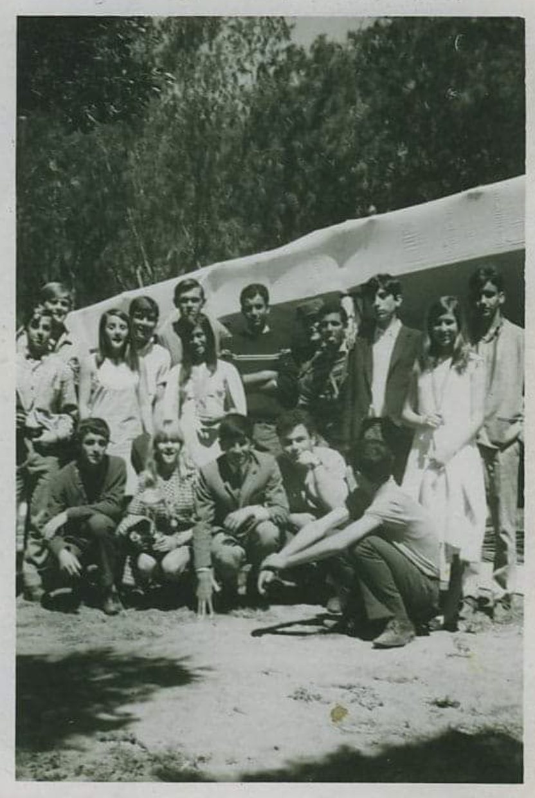

Durante los catorce años que Paz vivió en Sidi Ifni, se forjó una relación extraordinaria con su grupo de amigos, su "pandilla". Eran más que simples amistades; se sentían pioneros de una España lejana en una colonia que era su hogar absoluto. Esos lazos, templados por el sol del Sahara y el aislamiento compartido, crearon una unión tan fuerte que la partida hacia Valencia supuso una ruptura dolorosa. Aunque la distancia física se impuso, la esencia de esa hermandad africana permanece como el pilar emocional más profundo de su juventud.
During the fourteen years that Paz lived in Sidi Ifni, an extraordinary relationship was forged with her group of friends, her "gang". They were more than just friendships; they felt like pioneers of a distant Spain in a colony that was their absolute home. These bonds, tempered by the Sahara sun and shared isolation, created a union so strong that the departure for Valencia meant a painful rupture. Although physical distance prevailed, the essence of that African brotherhood remains the deepest emotional pillar of her youth.
За четырнадцать лет жизни Пас в Сиди-Ифни сложились необычайные отношения с её группой друзей, её «бандой». Это было больше, чем просто дружба; они чувствовали себя первопроходцами далекой Испании в колонии, которая была их единственным домом. Эти узы, закаленные солнцем Сахары и общей изоляцией, создали союз настолько крепкий, что отъезд в Валенсию стал болезненным разрывом. Хотя физическое расстояние взяло своё, сущность этого африканского братства остается глубочайшим эмоциональным столпом её юности.
За чотирнадцять років життя Пас у Сіді-Іфні склалися надзвичайні стосунки з її групою друзів, її «бандою». Це було більше, ніж просто дружба; вони відчували себе першопрохідцями далекої Іспанії в колонії, яка була їхнім рідним домом. Ці узи, загартовані сонцем Сахари та спільною ізоляцією, створили союз настільки міцний, що від'їзд до Валенсії став болючим розривом. Хоча фізична відстань взяла своє, сутність цього африканського братерства залишається найглибшим емоційним стовпом її юності.
Durante i quattordici anni in cui Paz ha vissuto a Sidi Ifni, si è forgiato un rapporto straordinario con il suo gruppo di amici, la sua "banda". Erano più che semplici amicizie; si sentivano pionieri di una Spagna lontana in una colonia che era la loro casa assoluta. Questi legami, temprati dal sole del Sahara e dall'isolamento condiviso, hanno creato un'unione così forte che la partenza per Valencia ha rappresentato una rottura dolorosa. Nonostante la distanza fisica, l'essenza di quella fratellanza africana rimane il pilastro emotivo più profondo della sua giovinezza.
在 Paz 居住在西迪伊夫尼的十四年里，她和她的朋友们（她的“小团伙”）建立了一种非凡的关系。他们不仅仅是朋友；在那个绝对是他们家园的殖民地里，他们觉得自己是遥远西班牙的先驱。这些羁绊经过撒哈拉阳光的磨练和共同的孤独，创造了一种如此强大的结合，以至于前往瓦伦西亚意味着痛苦的决裂。尽管物理距离不可避免，但这非洲兄弟情谊的本质仍然是她青春最深的情感支柱。
خلال السنوات الأربع عشرة التي عاشتها باز في سيدي إفني، نشأت علاقة استثنائية مع مجموعة أصدقائها، "عصابتها". كانوا أكثر من مجرد أصدقاء؛ شعروا وكأنهم رواد لإسبانيا كبعيدة في مستعمرة كانت موطنهم المطلق. هذه الروابط، التي صقلتها شمس الصحراء والعزلة المشتركة، خلقت اتحادًا قويًا لدرجة أن الرحيل إلى فالنسيا كان بمثابة قطيعة مؤلمة. على الرغم من المسافة الجسدية، تظل جوهر تلك الأخوة الأفريقية أعمق ركيزة عاطفية لشبابها.
Während der vierzehn Jahre, die Paz in Sidi Ifni lebte, entwickelte sich eine außergewöhnliche Beziehung zu ihrer Freundesgruppe, ihrer „Bande“. Es war mehr als nur Freundschaft; sie fühlten sich als Pioniere eines fernen Spaniens in einer Kolonie, die ihr absolutes Zuhause war. Diese Bande, gestählt durch die Wüstensonne und die gemeinsame Isolation, schufen eine so starke Einheit, dass der Aufbruch nach Valencia einen schmerzhaften Bruch bedeutete. Trotz der physischen Distanz bleibt die Essenz dieser afrikanischen Bruderschaft der tiefste emotionale Pfeiler ihrer Jugend.
Durant les quatorze années où Paz a vécu à Sidi Ifni, une relation extraordinaire s'est forgée avec son groupe d'amis, sa « bande ». Ils étaient plus que de simples amis ; ils se sentaient comme les pionniers d'une Espagne lointaine dans une colonie qui était leur foyer absolu. Ces liens, tempérés par le soleil du Sahara et l'isolement partagé, ont créé une union si forte que le départ pour Valence a été une rupture douloureuse. Bien que la distance physique se soit imposée, l'essence de cette fraternité africaine reste le pilillar émotionnel le plus profond de sa jeunesse.
パスがシディ・イフニで過ごした14年間、友人グループ、つまり彼女の「仲間（パンディージャ）」とは並外れた関係が築かれました。彼らは単なる友人以上の存在でした。絶対的な故郷である植民地において、遠いスペインの先駆者であると感じていたのです。サハラの太陽と共有された孤独によって鍛えられたこれらの絆は、バレンシアへの旅立ちが痛みを伴う決裂を意味するほど強固な結びつきを生み出しました。物理的な距離は生じましたが、そのアフリカの兄弟愛の本質は、彼女の青春時代の最も深い感情の柱として残り続けています。
Durante os catorze anos em que Paz viveu em Sidi Ifni, forjou-se uma relação extraordinária com o seu grupo de amigos, a sua "pandilha". Eram más que simples amizades; sentiam-se pioneiros de uma Espanha longínqua numa colónia que era o seu lar absoluto. Esses laços, temperados pelo sol do Sara e pelo isolamento partilhado, criaram uma união tão forte que a partida para Valência supôs uma rutura dolorosa. Embora a distância física se tenha imposto, a essência dessa irmandade africana permanece como o pilar emocional mais profundo da sua juventude.